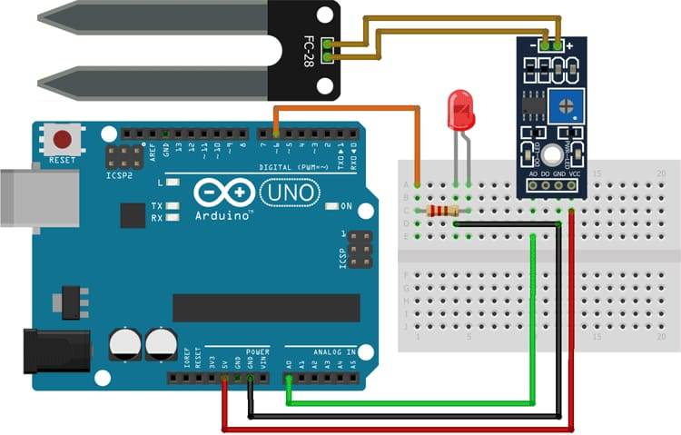

A Soil Moisture Sensor Poject typically works as to moniter the moisture level in the soil and automate the irrigation or alert the user when the soil gets too dry.
Step 1: Start
Step 2: Initialize Arduino and components
Step 3: Wait for moisture input
Step 4: Process the command
Step 5: Repeat steps continuously
Step 6: Stop
#define ledPin 6
#define sensorPin A0
void setup() {
Serial.begin(9600);
pinMode(ledPin, OUTPUT);
digitalWrite(ledPin, LOW);
}
void loop() {
Serial.print("Analog output: ");
Serial.println(readSensor());
delay(500);
}
int readSensor() {
int sensorValue = analogRead(sensorPin);
int outputValue = map(sensorValue, 0, 1023, 255, 0);
analogWrite(ledPin, outputValue);
return outputValue;
}